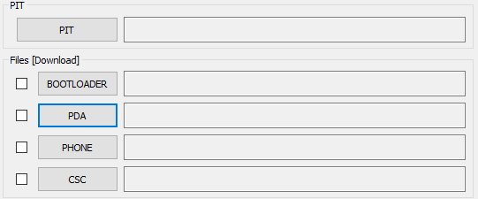

Realize Root no Samsung Galaxy s4 Mine I9192 com android 4.4.2

Não vou alongar-me aqui explicando o porquê de realizar root ou quais são seus beneficios ou malificios, creio que ao se encontrar aqui, você já entende o que isso significa e quais são suas Implicâncias, então vamos ao que interessa. Lembre-se, realize esse tutorial por sua conta e risco, não nós responsabilizamos por aparelhos brinckados ou que tornes o mesmo em um tijolo.
Para esse tutorial você irá precisar:
Após ter baixado os arquivos listados acima instale os Drives USB da Samsung e extraia os arquivos Odin.rar, CF_Auto_Root_GT-I9192_www.soinroms.com e a recovery Twrp.rar.
-
Para darmos inicio vamos ativar o modo desenvolvedor. Com o aparelho em mãos vá em Configurações > Mais > Sobre e Info. Software nesta seção clique 8 vezes em Número de compilação.
Volte as configurações e clique em "Opções do desenvolvedor" agora ative a "Depuração por USB".
Vamos por o Galaxy S4 em modo Download, para isso pressione ao mesmo tempo as teclas de "VOL -", "HOME" e "POWER" por alguns segundos, ao aparecer uma nova tela pressione a tecla de "VOL +" para confirmar.

Conecte o Galaxy S4 ao pc e abra o programa ODIN. Ao conectar o aparelho ao PC, note que a janela ID:COM ficará amarelada indicando que o dispositivo foi reconhecido.
Instalar Root

Com o programa aberto clique em PDA e procure pelo arquivo "CF_Auto_Root_GT-I9192_www.soinroms.com.tar.md5" que extraimos do arquivo de mesmo nome na pasta Downloads.
Com o aparelho conectado ao PC e com o arquivo selecionado pelo programa Odin clique em Start para iniciar o processo de instalação do Root.

Aguarde cerca de 15s para que o processo conclua com êxito.
Com isso o aparelho irá reiniciar automaticamente e já estará com o root em seu sistema, tudo o que você prescisa depois de iniciado é ir na Play Store e instalr um Gerenciador de Eventos Root, na loja busque por "Super Su" escolha o primeiro da lista e o instale. Root instalado e com Gerenciador use com moderação, até mais.
Então se obteve problemas com alguns dos passos listados acima, fique tranquilo a deixar os seus comentários logo abaixo.